Neste tutorial vamos aprender um pouco mais sobre o
ggplot em conjunto com os outros pacotes do
tidyverse.
Para praticar, vamos usar o dataset
netflix_series_limpo.xlsx, o dataset
NetflixViewingHistory.csv e o dataset
imdb_series.xlsx e o dataset imdb.rds de
filmes. Portanto, o primeiro passo será carregar os datasets:
Para realizar gráficos de dispersão, precisamos passar a função
geom_point() como uma nova camada do ggplot.
As coordenadas x e y devem ser numéricas
necessariamente. Vamos usar como exemplo, o dataframe
imdb_filmes.
No exemplo, a posição do ponto no eixo x pode ser dada
pela coluna orcamento e a posição do ponto no eixo
y pela coluna receita.
imdb_filmes %>%
ggplot(aes(orcamento/1000000,receita/1000000000))+
geom_point()+
scale_x_continuous(labels = scales::dollar,
breaks = c(0, 50, 100,150, 200,250,300,350))+
scale_y_continuous(labels=scales::dollar,
n.breaks = 8)+
labs(x="Orçamento em Milhões de $",
y="Receita em Bilhões de $")+
theme(panel.background = element_rect(fill = "#fbeca5", color = "black",
size = 2),
panel.grid = element_line(color= "white"))+
coord_cartesian(ylim = c(0,6),
xlim = c(0,450))## Warning: Removed 7004 rows containing missing values (geom_point).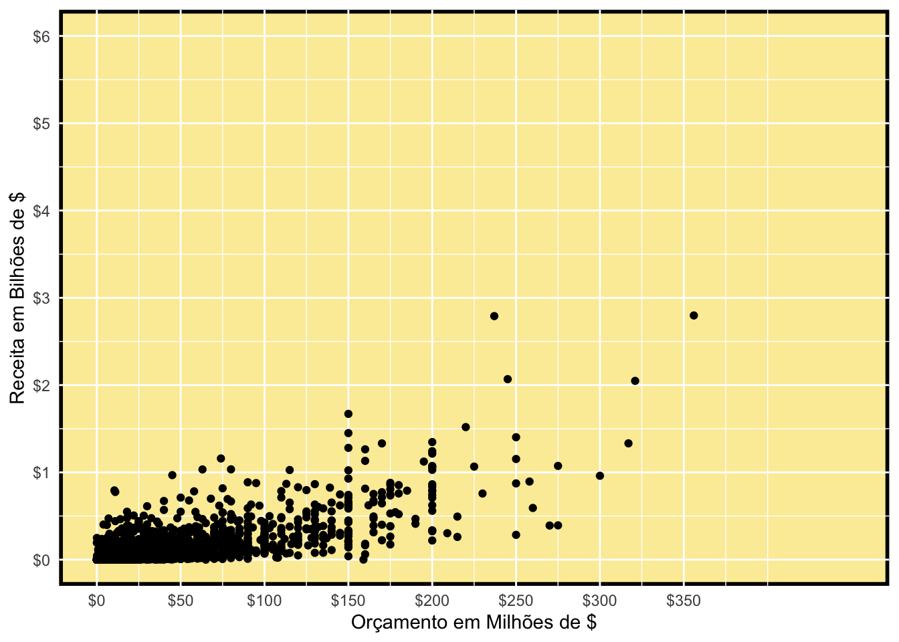
Podemos adicionar cores grupalmente para todos os pontos ou podemos usar alguma outra variável para criar cores em gradiente
imdb_filmes %>%
ggplot(aes(orcamento,receita))+
geom_point(color="#e38421", size=5)## Warning: Removed 7004 rows containing missing values (geom_point).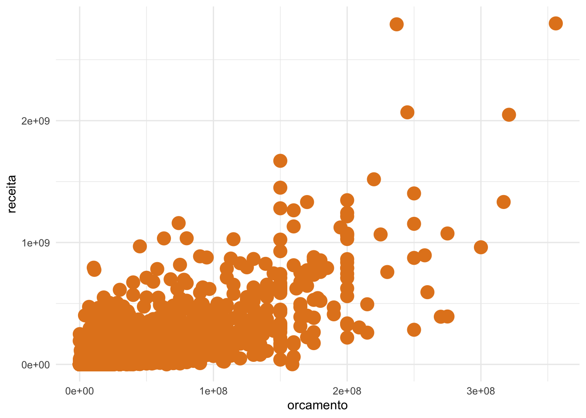
Para ver mais detalhamento da função geom_point()
recomenda-se a leitura do Capítulo 8 do Livro “Curso-R”.
Para realizar gráficos de barras usamos geom_col().
Vamos usar o dataframe imdb_filmes para exemplificar,
ordenando as linhas por ordem decrescente de UserRating.
Primeiro vamos gerar o gráfico com as configuração padrão.
imdb_filmes %>%
arrange(desc(nota_imdb)) %>%
head(10) %>%
ggplot(aes(titulo, nota_imdb,label = nota_imdb))+
geom_col()+
geom_label()+
theme_minimal()+
labs(x="",y="",
title = "Filmes com maior nota no imdb")+
scale_y_continuous(
breaks = c(0,2,4,6,8,10),
limits=c(0,10))+
coord_flip()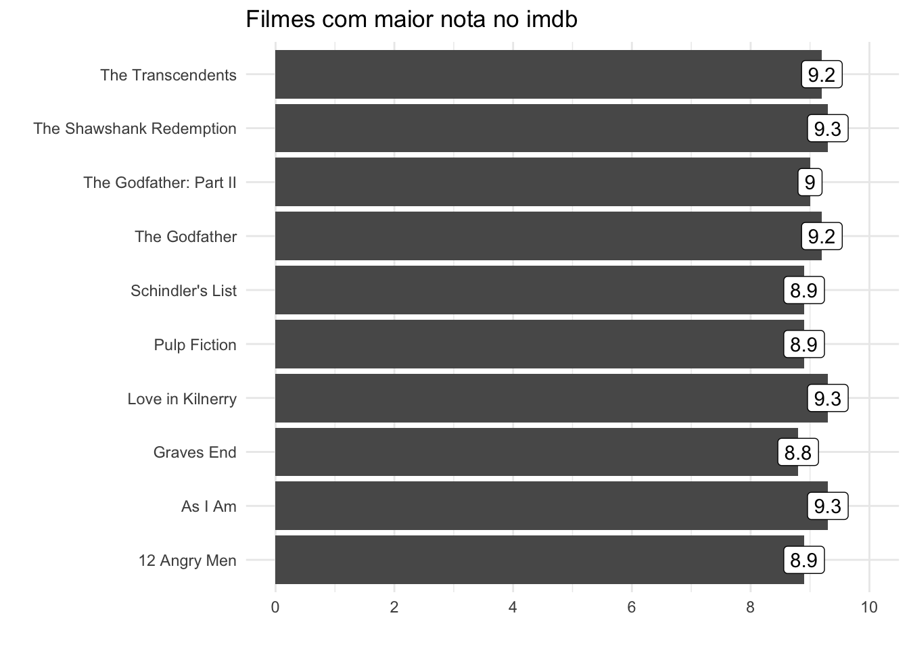
Podemos mudar os eixos (trocar de eixo) usando a função
coord_flip()
imdb_filmes %>%
arrange(desc(nota_imdb)) %>%
head(10) %>%
ggplot(aes(reorder(titulo,nota_imdb), nota_imdb))+
geom_col(fill="#650871")+
coord_flip()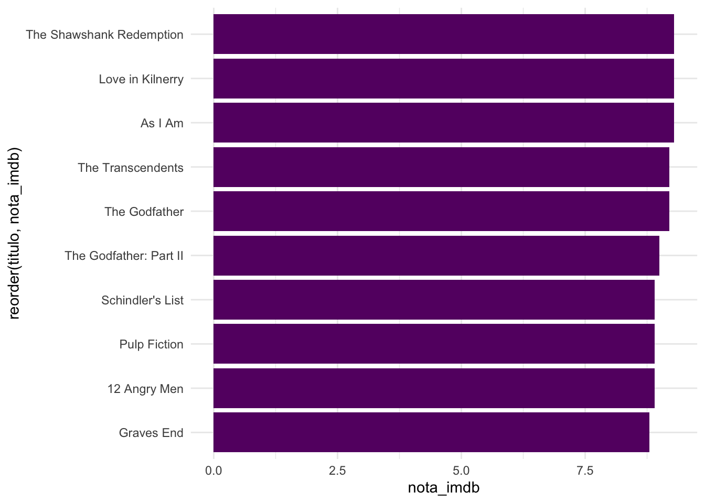
imdb_filmes %>%
arrange(desc(nota_imdb)) %>%
head(10) %>%
ggplot(aes(reorder(titulo,nota_imdb),
nota_imdb,
fill=titulo,
label=nota_imdb))+
geom_col()+
geom_label()+
coord_flip()+
theme_minimal()+
theme(legend.position = "none")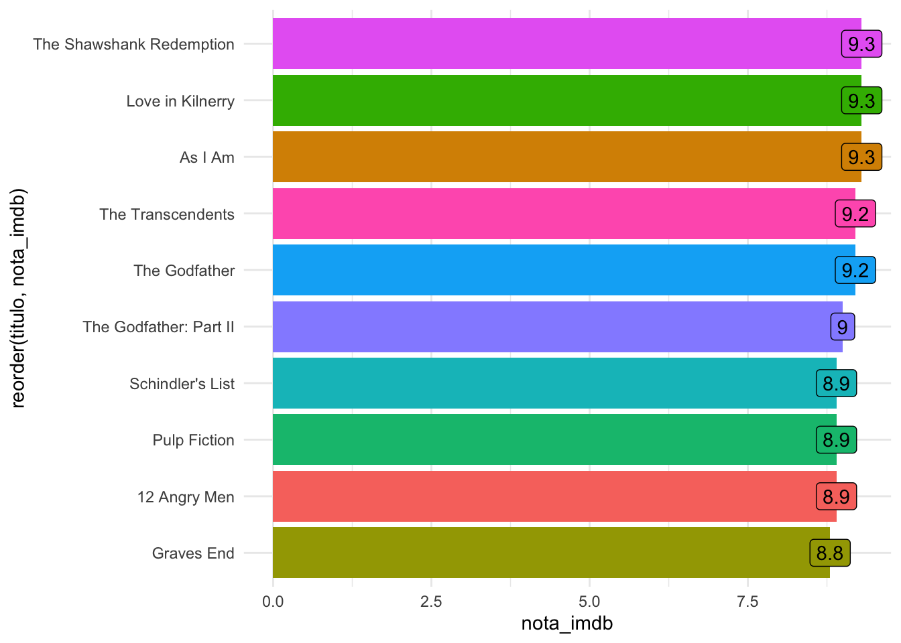
Vamos aplicar tudo o aprendido num segundo exemplo, usando o
dataframe imdb para mostrar os seriados com maior número de
votos UserVotes.
imdb %>%
group_by(series_name) %>%
summarize(Votos = sum(UserVotes)) %>%
arrange(desc(Votos)) %>%
ggplot(aes(reorder(series_name,
Votos),
Votos))+
geom_col(fill="#c53a48")+
coord_flip()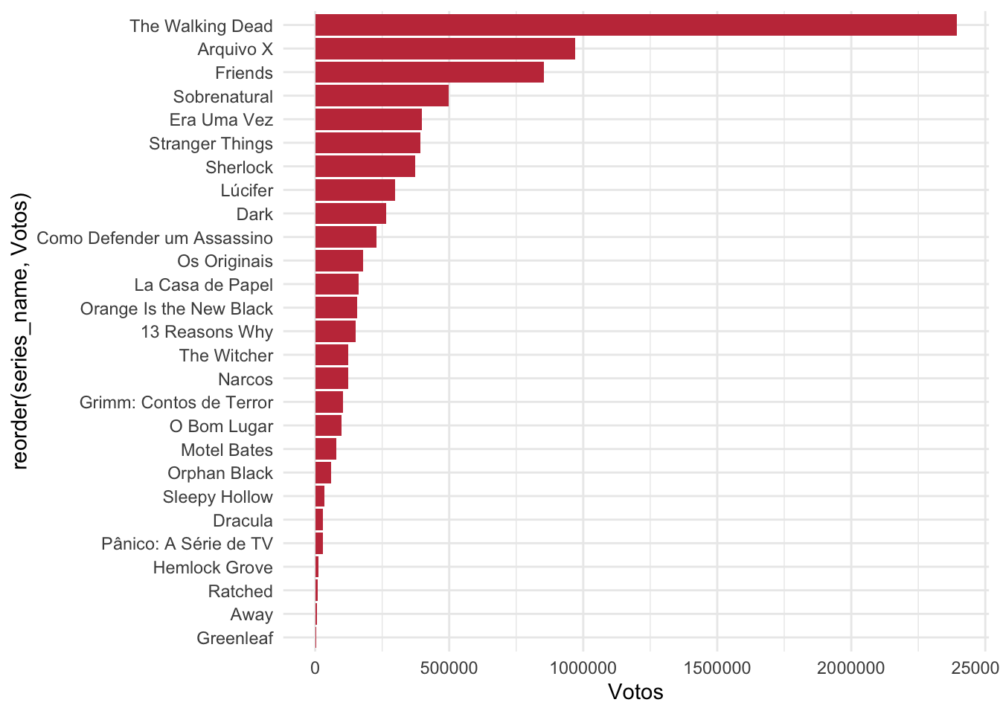
Você pode ver mais exemplos no Capítulo 8 do livro Curso-R
Vamos fazer um gráfico de linha usando a função
geom_line() como camada do ggplot usando o
dataset netflix_filmes para mostrar o total de capítulos
assistidos por dia.
netflix_filmes %>% #colocar código ggplot
group_by(Date) %>%
summarize(filmes=n()) %>%
ggplot(aes(Date,filmes))+
geom_point(size=5, color="black")+
geom_line(size=1.2, color="#c53a48")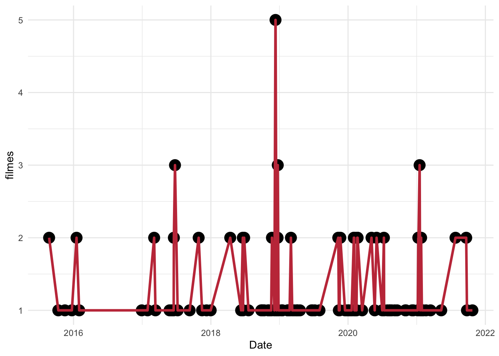
Podemos agrupar contagens usando a função floor_date do
pacote lubridate para meses, trimestres, etc.
Adicionalmente, podemos incluir cores.
library(lubridate)##
## Attaching package: 'lubridate'## The following object is masked from 'package:cowplot':
##
## stamp## The following objects are masked from 'package:base':
##
## date, intersect, setdiff, unionnetflix_filmes %>%
count(mes = floor_date(Date, "month")) %>%
ggplot(aes(mes,n))+
geom_line(size=1.2, color="#502846")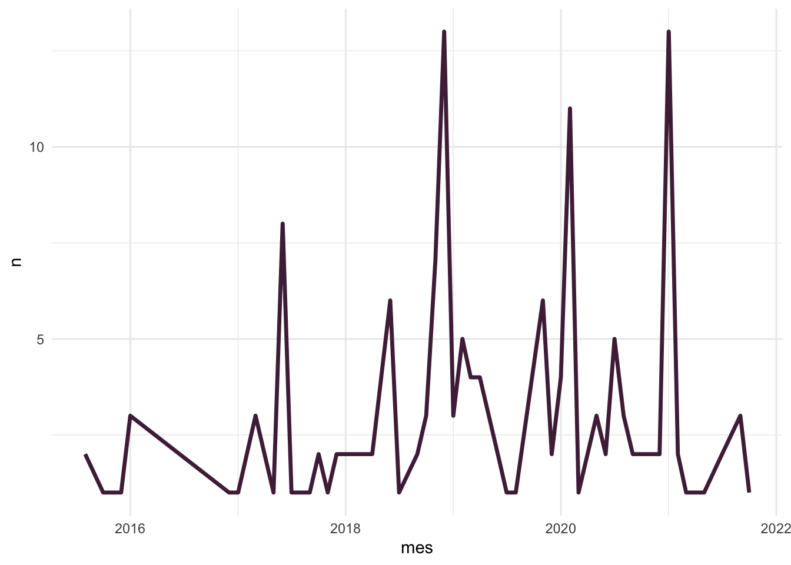
Vamos usar o dataset imdb_filmes para comparar o
desempenho dos filmes (nota imdb) em função de ter lucro ou não. Vamos
adicionar também uma camada extra para nos mostrar a tendência de ambas
curvas, usando geom_smooth().
imdb_filmes %>%
mutate(lucro = receita - orcamento,
lucro_factor = ifelse(lucro > 0, "Sim","Não")) %>%
filter(!is.na(lucro)) %>%
group_by(lucro_factor,ano) %>%
summarise(nota_media=mean(nota_imdb,na.rm=TRUE)) %>%
ggplot(aes(ano,nota_media,color=lucro_factor))+
geom_line(size=1.5)+
geom_smooth()## `summarise()` has grouped output by 'lucro_factor'. You can override using the
## `.groups` argument.
## `geom_smooth()` using method = 'loess' and formula 'y ~ x'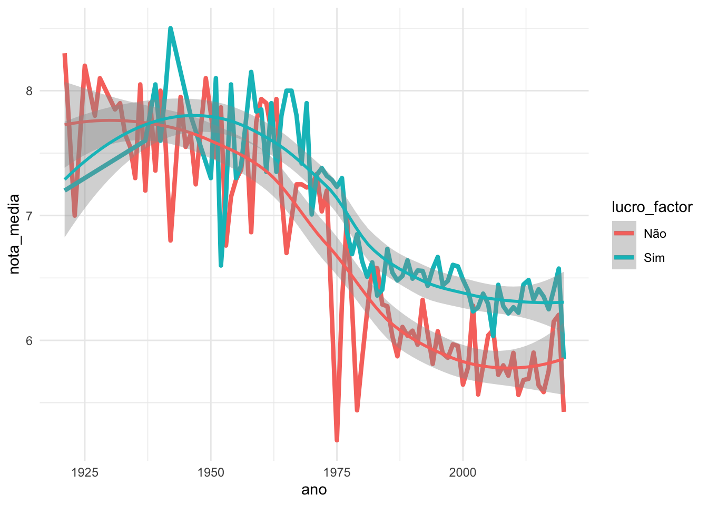
Você pode ver mais exemplos do geom_line() no livro Curso-R
Boxplots servem para comparar a distribuição dos dados em diferentes
categorias. Vamos usar os dados do dataset imdb para
comparar as notas de UserRating em cada temporada do
seriado The Walking Dead.
seriado_escolhido <- "The Walking Dead"
imdb %>%
filter(series_name == seriado_escolhido) %>%
select(1,2,4,7) %>%
ggplot(aes(factor(season), UserRating))+
geom_boxplot()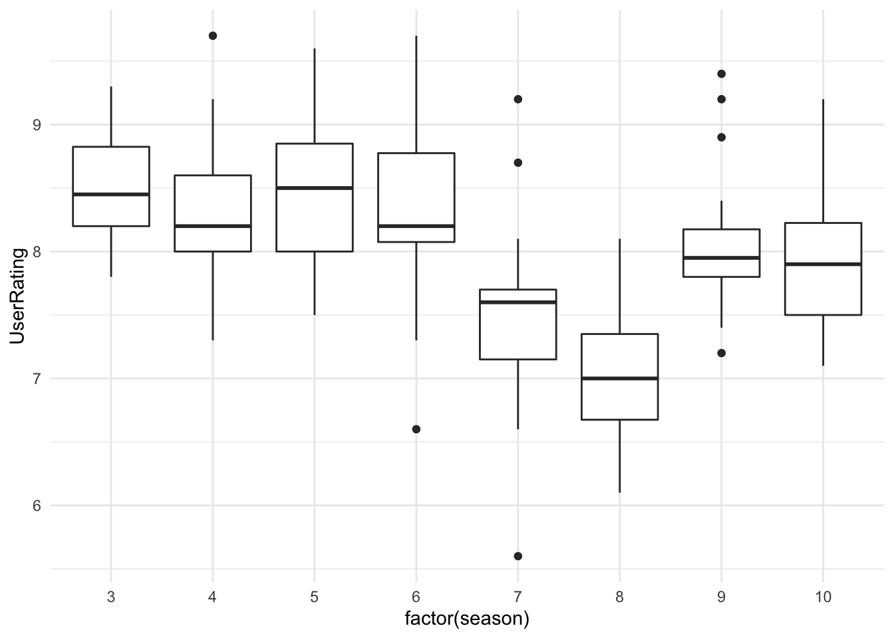
Vamos adicionar cores para cada temporada, para isto precisamos
incluir o argumento fill dentro da camada de estetica
aes. Podemos também escolher as cores de paletas
pré-definidas como: scale_fill_viridis_d() e
scale_fill_brewer()
imdb %>%
filter(series_name == seriado_escolhido) %>%
select(1,2,4,7) %>%
ggplot(aes(factor(season), UserRating, fill=factor(season)))+
geom_boxplot() +
scale_fill_viridis_d(alpha=0.6)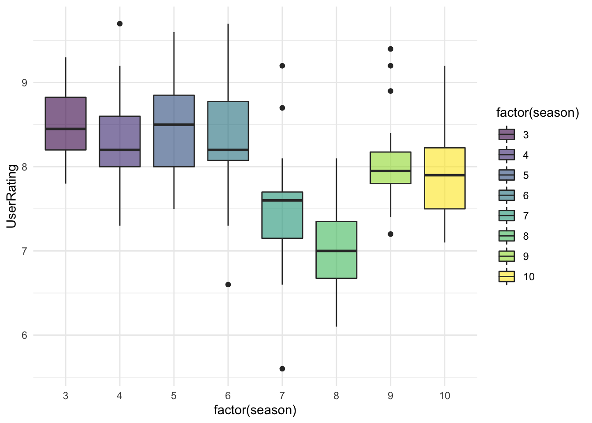
O Histograma serve para observar a distribuição dos dados e eventualmente serve para comparar mais de uma distribuição.
Vamos continuar com os dados sobre UserRating usados
anteriormente para graficar Boxplots. Neste caso, vamos graficar a
distribuição do UserRating considerando apenas a contagem.
Podemos usar o argumento bins ou binwidth para
ajustar melhor o resultado.
imdb %>%
filter(series_name == seriado_escolhido) %>%
select(1,2,4,7) %>%
ggplot(aes(UserRating))+
geom_histogram(binwidth = 0.5)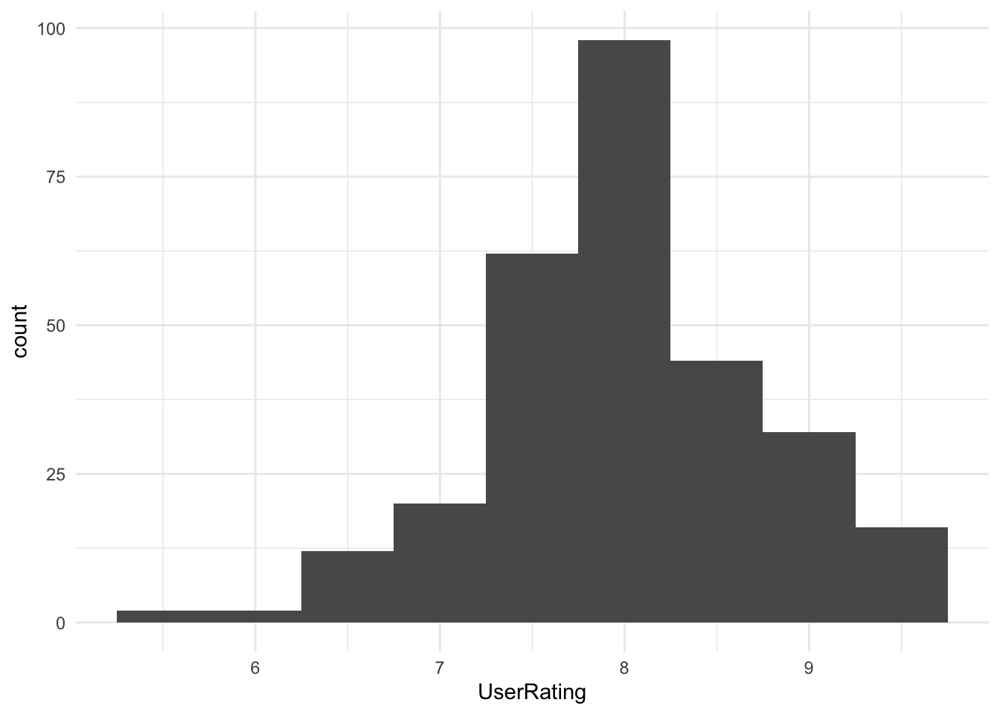
Agora, vamos usar o dataset imdb_filmes para verificar
quão lucrativo é um determinado genero.
genero_escolhido <- "Comedy"
imdb_filmes %>%
#filter(str_detect(string = generos, pattern = genero_escolhido)) %>%
filter(generos == genero_escolhido) %>%
mutate(lucro = receita - orcamento) %>%
ggplot(aes(lucro))+
geom_histogram(bins = 10)## Warning: Removed 345 rows containing non-finite values (stat_bin).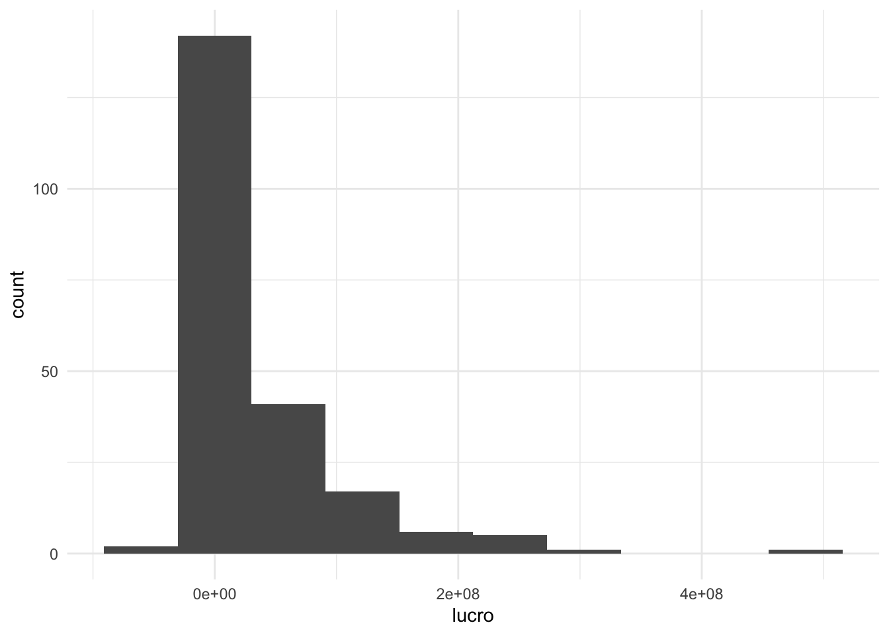
Podemos melhorar a apresentação, escolhendo cores diferentes
adicionando o argumento fill dentro de
geom_histogram().
imdb_filmes %>%
#filter(str_detect(string = generos, pattern = genero_escolhido)) %>%
filter(generos == genero_escolhido) %>%
mutate(lucro = receita - orcamento) %>%
ggplot(aes(lucro))+
geom_histogram(bins = 50, fill="#cde55a")## Warning: Removed 345 rows containing non-finite values (stat_bin).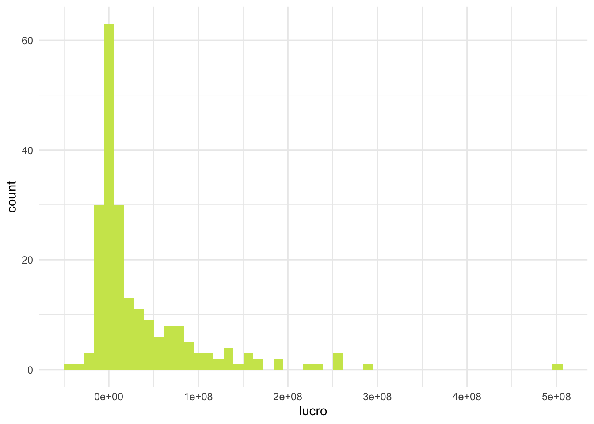
Você pode ver mais exemplos do Histogramas e Boxplots no Cap. 8 do livro Curso-R
Podemos usar alternativamente um outro tipo de visualização muito
similar, que é a geom_density(). Vamos usar os mesmos
exemplos anteriores.
imdb_filmes %>%
#filter(str_detect(string = generos, pattern = genero_escolhido)) %>%
filter(generos == genero_escolhido) %>%
mutate(lucro = receita - orcamento) %>%
ggplot(aes(lucro))+
geom_density()## Warning: Removed 345 rows containing non-finite values (stat_density).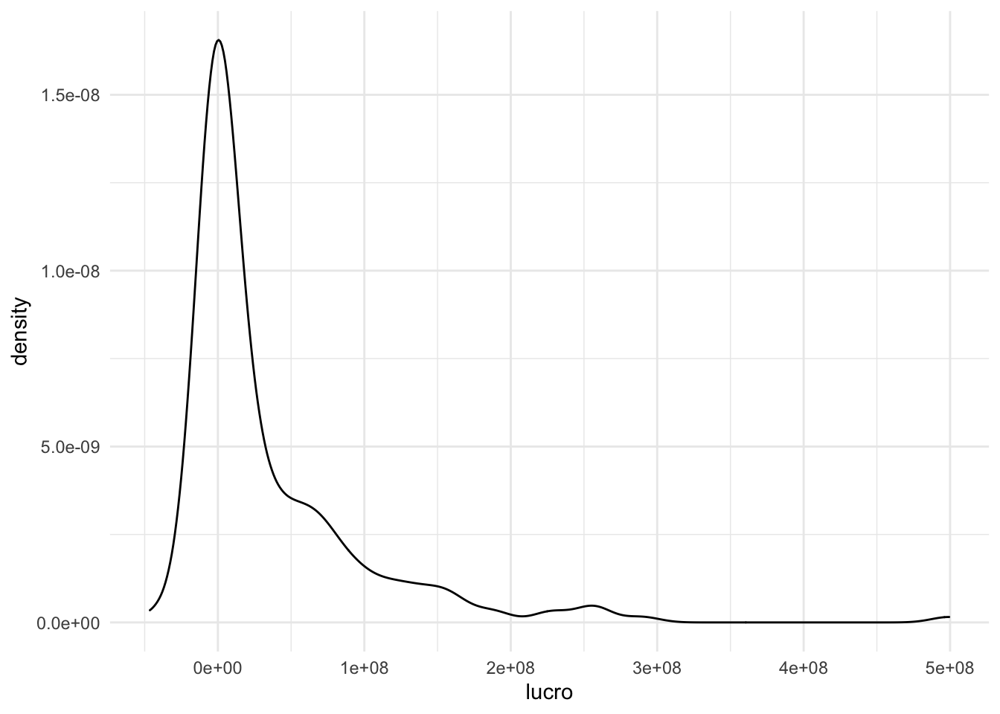
Podemos também customizar a cor da linha e da área abaixo da
densidade usando os argumentos fill e color
dentro do geom_density() bem como a transparência usando
alpha.
imdb_filmes %>%
#filter(str_detect(string = generos, pattern = genero_escolhido)) %>%
filter(generos == genero_escolhido) %>%
mutate(lucro = receita - orcamento) %>%
ggplot(aes(lucro))+
geom_density(fill="#e99d4e", alpha = 0.9,
color = "#e99d4e")## Warning: Removed 345 rows containing non-finite values (stat_density).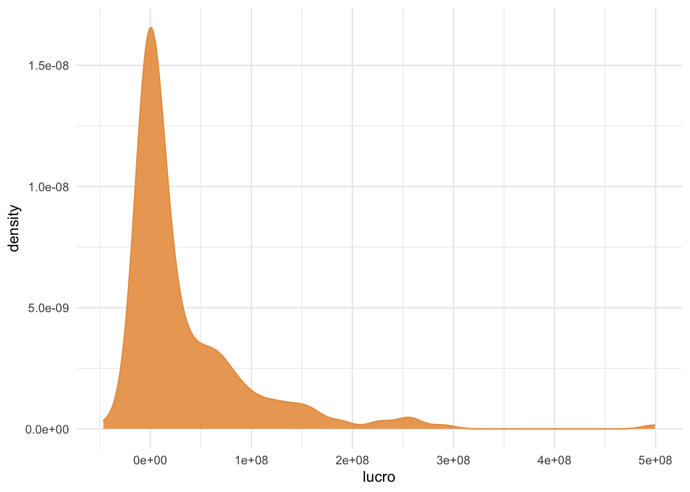
E por fim, podemos comparar duas ou mais categorias. Vamos fazer
isso, comparando os generos “Comedy” e “Drama” para saber se há
diferenças significativas em termos de lucro. Para isto, vamos incluir o
argumento group dentro da camada aes além de
fill e color. Adicionalmente podemos incluir
alpha dentro de geom_density().
imdb_filmes %>%
#filter(str_detect(string = generos, pattern = genero_escolhido)) %>%
filter(generos %in% c("Comedy","Drama")) %>%
mutate(lucro = receita - orcamento) %>%
ggplot(aes(lucro, group=generos, fill=generos, color=generos))+
geom_density(alpha=0.5)## Warning: Removed 783 rows containing non-finite values (stat_density).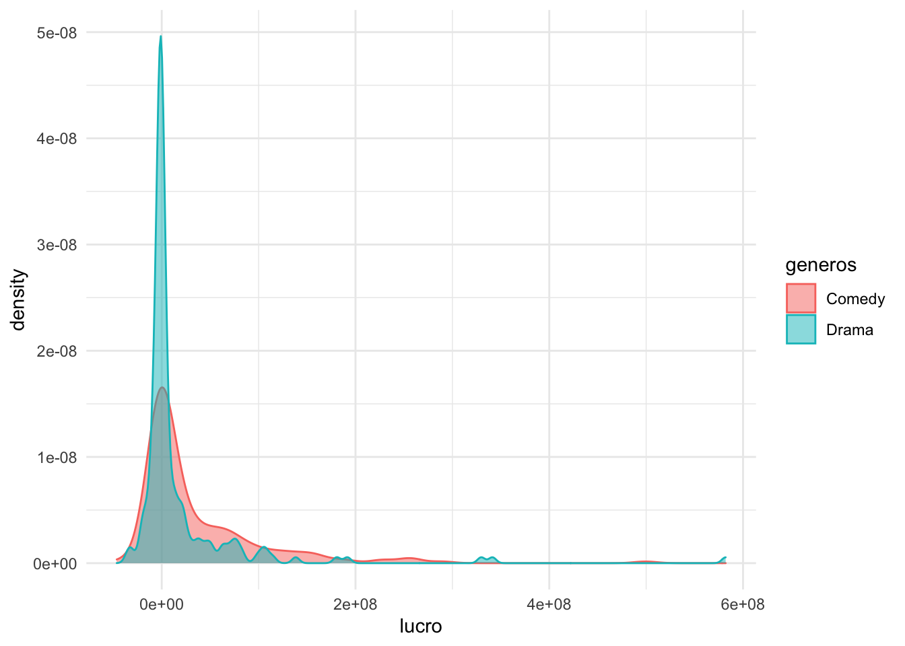
O ggplot inclui praticamente customizações infinitas, desde as mais simples, como atribuir títulos aos eixos até mudar as escalas, por exemplo usando transformações logarítmicas.
imdb_filmes %>%
mutate(lucro = receita-orcamento) %>%
ggplot(aes(x = orcamento, y = receita, color=lucro)) +
geom_point(alpha=0.5)+
scale_y_log10()+
scale_x_log10()+
geom_smooth(method = "lm", se=FALSE)+
theme_bw()+
scale_color_gradient(low = "red", high = "green")## Warning: Transformation introduced infinite values in continuous x-axis
## Transformation introduced infinite values in continuous x-axis## `geom_smooth()` using formula 'y ~ x'## Warning: Removed 7004 rows containing non-finite values (stat_smooth).## Warning: Removed 7004 rows containing missing values (geom_point).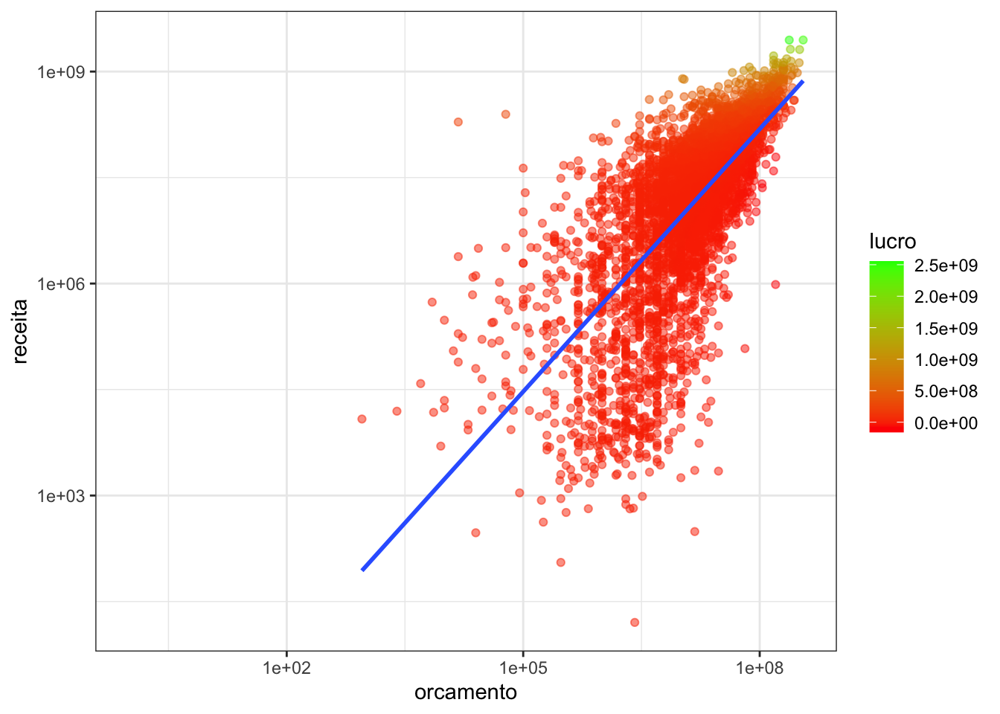